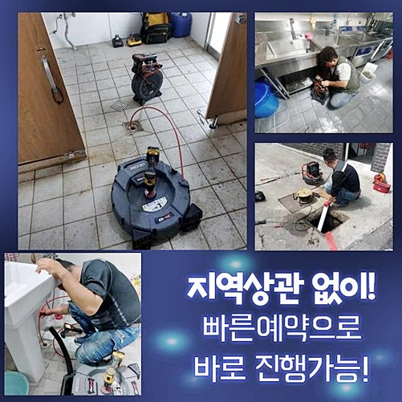
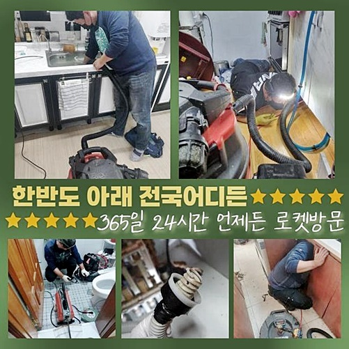
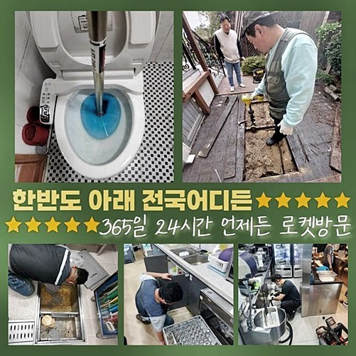
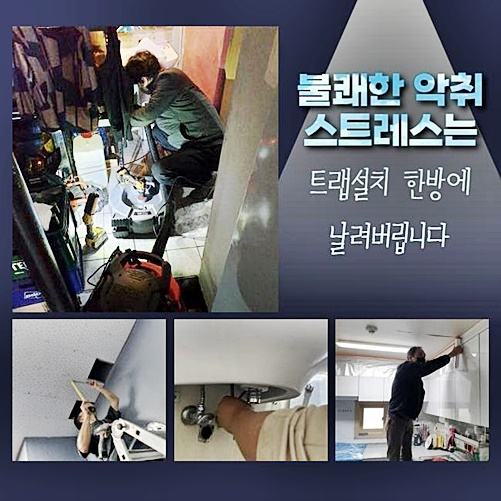
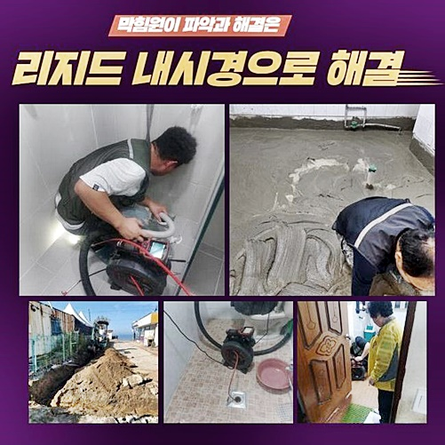
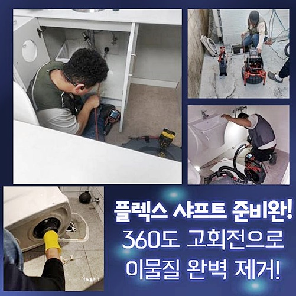
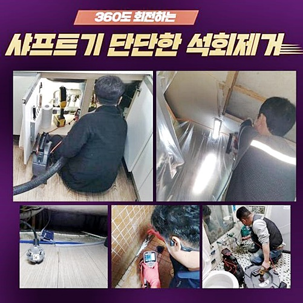

🏠 부천 원미동오수관뚫음 도당동 하수구청소 출장설비
용인시 처인구 배관막힘 전문 시공 후기

📋 작업 개요
- 위치: 용인시 처인구, 수원시 영통구, 화성시 동탄
- 서비스 유형: 배관막힘, 하수구청소, 고압세척, 내시경점검
- 작업 일시:
- 업체명: 하수구수사대 (010-5615-2118)
🔍 문제 상황
부천 원미동오수관뚫음 도당동 하수구청소 출장설비
욕실 및 주방공간 다용도실 거주지에서 물들을 쓰는 공간일 경우 꼭 있어야 될 배수로!
하수관이 막혀버리면 다양한 방면에서 불편들이 많을 수 밖에요
화장실의 경우 대다수 떨어진 머리카락이라던가 잔해가 군데군데 퇴적되며 발발하게되요
또한 욕실배관 일때는 배수자체가 진행될수가 없어 불편이 증폭되는 경우가 많아요
앞으로 막혔던 사례를 같이 보면서 배수장애를 맞닥뜨렸을때 어떤 대처를 해야되는지 안내하겠습니다
먼저 거주지에서 막혀버리는 증세가 야기되었을땐 혼자서 해결할 수 없는 사안이여서 전문진과 시정하는게 중요하겠습니다
보통 배출되지 못하거나 역류되는 증세로 막혀버렸다는걸 알수있는데요
이럴때일수록 허둥지둥 대기보단 안전하게 해결해야하는데 신경을 쓰지못해 방치해둔다면 악취가 생겨나는 등의 불편들이 생겨날 가능성이 농후하니 조속하게 대처해주세요
고객분도 증세를 보시고선 물빠짐 불능을 인지하셔서 조속하게 저희에게 의뢰를 맡겨주셔서 빠르게 해결에 돌입했죠
방문드리자마자 진단을 수행해주었습니다 첫번째로 배수로를 살폈어요
배관 밖으로도 오수가 존재하는걸 확인하고 통수도 뻑뻑하게 흘러가는것을 알았죠

🔎 원인 분석
💡 전문가 진단: 정밀 진단 장비를 사용하여 슬러지의 고착 여부를 판명하고 타격/세척 작업을 실시했습니다.
의뢰자도 초창기엔 배수관에 잔해가 침전되는 바람에 막힌것이라 입구부터 청소를 해보셨다고 전해주셨습니다
그럼에도 불구하고 배수자체가 제자리였고 각종 용품을 이용해주어도 증상들이 나아지지를 못해서 저희들을 부르시게 된거라 설명하셨어요
하수시스템에 결함이 생긴 곳을 뚫기위해선 어째서 증세가 발발한건지 아는것이 중요한데요
미량이라던가 약간의 머리카락들처럼 잔해가 초입부분에 끼어서 막혔을 경우 어렵지않게 구매가능한 하수관뚫는데에 최적화된 용품들을 사용해 쉽게 해결가능한 사례들도 있죠
반대로 배수관에 유분성분과 석회등이 쌓이게되어 발생되는 증상일 경우 기기를 운용한 다음 수리를 진행시켜야 합니다
첫째로 석션기기를 이용하여 잔재들을 빼내주었습니다
석션기기는 압의 차이를 바탕으로 잔여물을 배출시켜주는 장비로서 여러분이 알고있는 진공청소기 제품과 동일하다고 보셔도 됩니다
그러나 오수만 배출되고 청소해줘야되는 잔해물은 제자리였기에 첫번째로 하수만 배출시키고 심층부를 들여다보아야 했어요
내시경장치를 이용했는데요
투입시키니 입구부터 흡착된 어마어마한 석회성분들이 모습을 드러냈죠
석회성분은 군데군데 함유된 칼슘성분들이 반응하게 되면서 파생되는 이물질의 한가지인데요
또한 시공이 된지 꽤지난 건축물 구조상 심층부로 이렇게 석회 찌꺼기들이 차곡차곡 쌓여요
오늘의 경우도 석회들로 인해 배수에 문제들이 발생하고 배수들이 될 수 없었던 모습이였는데 이러할 땐 장치를 가용하면서 화학적인 약품들을 써줘야 되는데요

🔧 작업 과정
약품의 경우 흔히 하수관뚫는데에 최적화된 클리너들을 생각하시는 고객님들이 많으세요
주위에서 판매하고 있는 약을 가지고는 제대로 해결하기에는 무리가 있죠
중화제 약품들을 이용해주어야 해요
또한 석회물질도 기름기들과 똑같이 시간들이 흐르면서 딱딱하게 굳어지는 특성들이 있죠
그리하여 해결에 힘쓰지않으면 막힘증세가 불거지거나 물이 새는 증상들도 심해질 수 밖에요
금일에도 굳어진 석회이물로 배수가 불가한 곳이었으므로 해결에 박차를 가하고자 중화제를 써보았어요
잔해들은 석션 수리를 통해 제거해주고 전용 약품들을 투입시켜 석회이물질을 녹여주는 수리를 시작했는데요
이렇게 중화제를 써주어 석회이물을 유화시켜주는 수순을 밟아나가 오차없이 안쪽부분을 청소하는것이죠
이것처럼 석회물질들을 녹였다면 다음엔 플렉스 샤프트를 운용한 다음 벽측에 붙어있는 잔재도 청소합니다
하수가 이동하는 배수로 속에 침전되어있는 이물은 샤프트 장비를 이욯하여 빈틈없이 청소해주셔야 욕실공간을 쓰시며 머리카락등이나 조그마한 잔해가 무리없이 배관으로 빠르게 빠져나가죠
배수관에 존재하던 동시에 석회물질까지 무리없이 제거시킵니다
분쇄된 이물은 심층부로 들어가지 못하도록 앞전에 흡입시켰던 석션장치로 흡입 단계들을 진행시킵니다
그렇다면 오하수들은 석션기기와 연결지어진 부분으로 튀지않고 담기기에 안으로 들어가질 않아요
최종적으로 깨끗히 정리해주는 작업이죠
스케일링 수리를 가용해주어 깨끗하게 세척들을 끝냈습니다
석회들은 수도를 이용하는 곳이면 언제라도 생성되기 마련입니다
이와 같은 상황으로 인해 배관의 컨디션을 점검해주고 주의력을 가지고 예방에 촉각을 세우시는게 1순위인걸 기억해주시기를 부탁드려요
세척이 끝났으면 문제가 사라졌는지 체크를 실시했죠
다행스럽게도 하수가 시원하게 빠져나가는걸 목격했어요
의뢰자도 고민이 꼼꼼히 해소된 결과 안심하시고는 전문가인 저희께 고맙다고 하시어 저희의 배관 해결사들도 만족감을 느끼면서 철수할 수 있었어요


✅ 작업 완료
이렇게 문제없는 물 사용과 더불어 무시할 수 없는것이 청결하게 환경이라고 할 수 있죠
계속해서 강조드려도 과하지않듯이 번거로울지언정 간헐적으로 신경쓰시면 쾌적한 환경속에서 일상생활을 할 수 있어요
마찬가지로 동일증상이 야기될 시 당황해하지말고, 이 글의 내용들을 참고하시어 청결하게 욕실을 유지하시기를 바랍니다
한시간을 넘기지않고 어느곳이라도 달려가니 편히 문의해주신다라면 조속하게 도와드릴게요!
수도사용이 제한되는 상황들! 서둘러 저희 전문진과 해결해봅시다!




⚠️ 하수구 배관 막힘 예방 및 관리 가이드
- ✅ 머리카락, 비닐, 물티슈 등 물에 분해되지 않는 이물질은 절대 흘려보내지 마세요.
- ✅ 기름기 많은 식기는 설거지 전 키친타올로 먼저 기름때를 닦아내세요.
- ✅ 주기적으로 배수구에 뜨거운 물을 가득 부어주어 유지방 고착을 방지하세요.
- ✅ 작업 후 1년 이내 재발 시 무상 A/S 보증 서비스를 제공합니다.
💡 핵심 정리
- 확실한 장비 작업(내시경 점검 및 샤프트 스케일링)으로 원인을 뿌리 뽑습니다.
- 작업 후 1년 이내에 동일한 부위 재발 시 100% 무상 A/S 서비스를 보장합니다.
- 서울 · 경기 · 인천 전 지역에 24시간 언제든 긴급 출동할 수 있도록 항시 대기 중입니다.
❓ 자주 묻는 질문 (FAQ)
🚨 용인시 처인구 배관막힘 문제로 고민이신가요?
정확한 원인 진단과 확실한 시공으로 재발 없는 해결을 약속드립니다.
24시간 긴급 출동 | 서울 · 경기 · 인천 전지역 | 1년 내 재발 시 무상 A/S